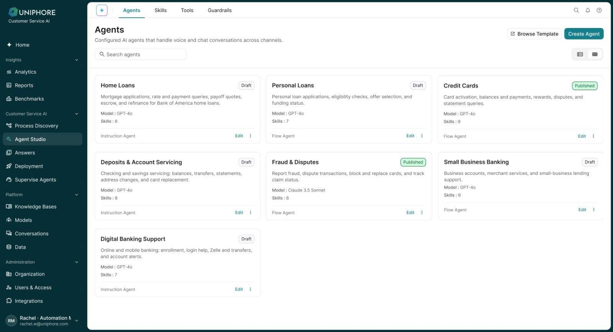
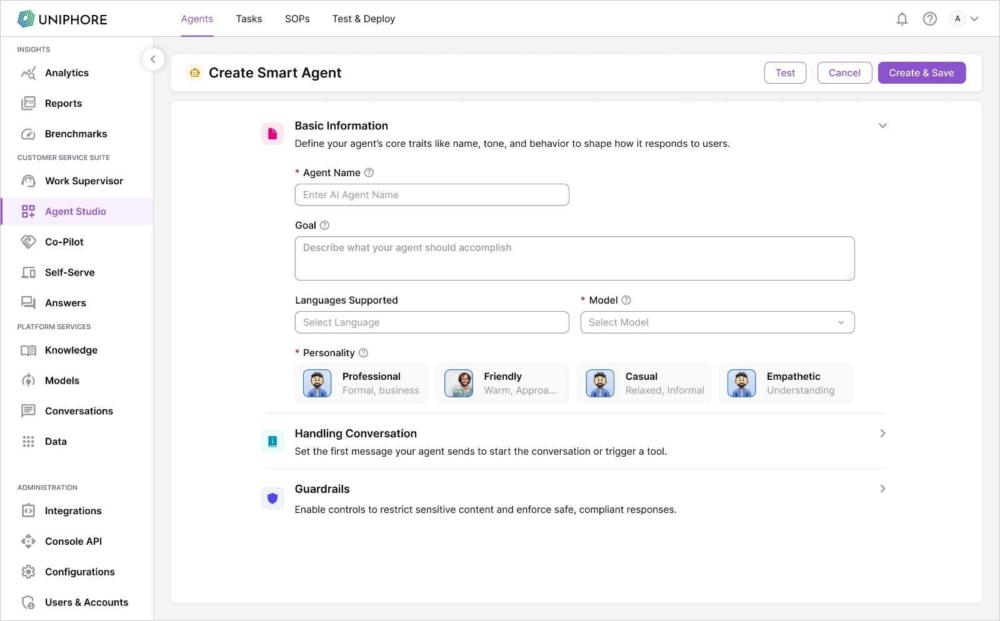
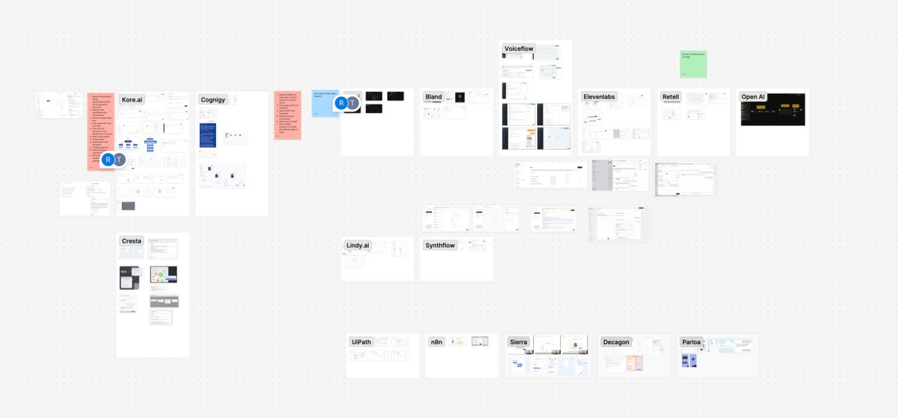
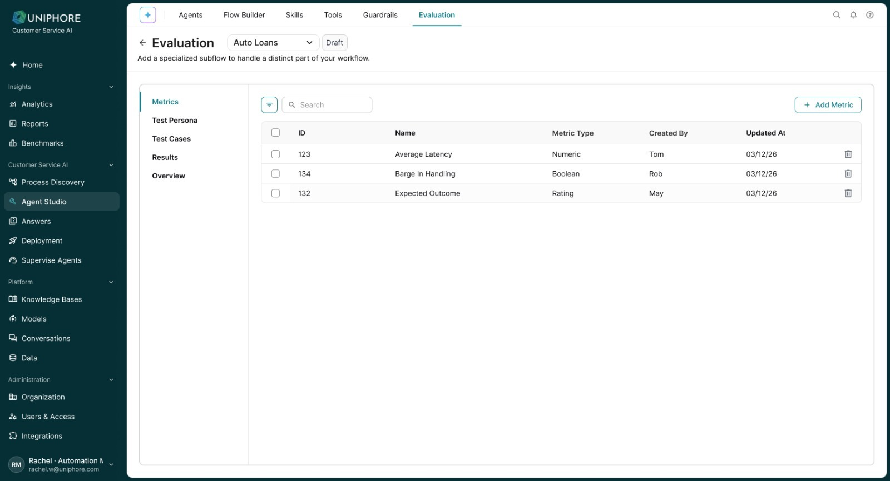
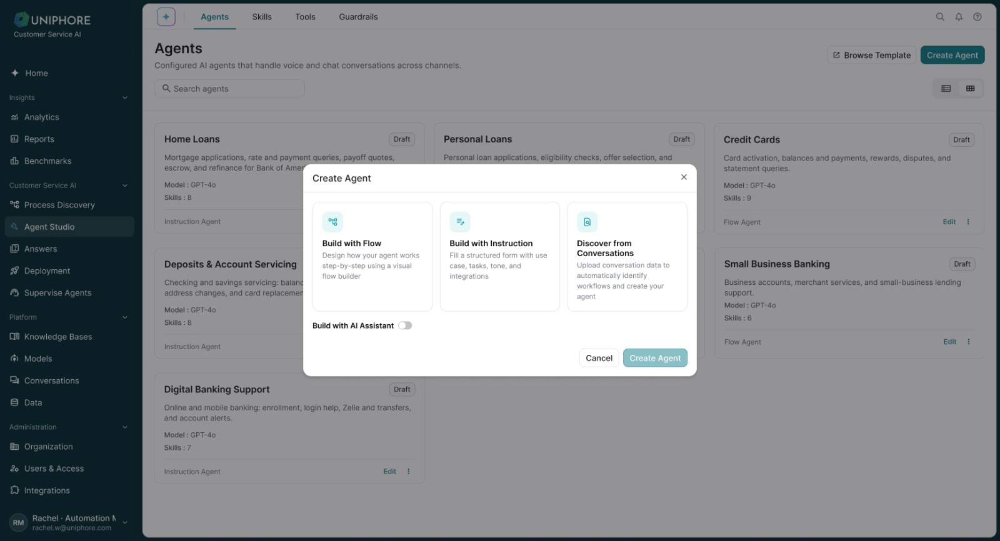
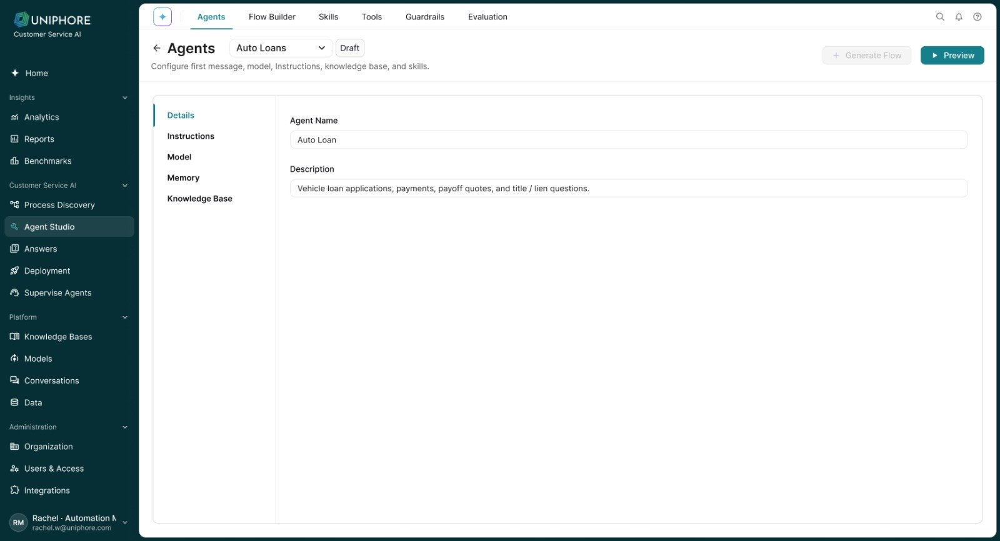

Flow Builder
Flow Builder became a design problem of its own.

OrientationBranch readabilityConditionsReusability
How I worked across platform migration, rule-based conversational AI and LLM-powered Agents as the product evolved from configuring behaviour toward managing increasingly autonomous systems.


Platform context
Self-serve, agent assist, conversation capture and analytics had grown through different products. The goal: bring them onto one common foundation.
The actual problem
Discovery & audit
A platform migration couldn’t begin with new screens. I mapped existing capabilities against the new platform — what stayed, what moved, what needed review, what became a gap — as a working reference for the whole migration.
Competitive research

Rule-based foundation
Self-Serve already supported conversational automation through a rule-based model — intents, training phrases, entities and flows.
Known input · known rule · known path.
The advantage was control.
Scaling limits
More conversational freedom → more configuration to anticipate it.
Flow Builder
The interaction model changed
Mental model
Not only configuration — but controlled autonomy.
Hybrid model
The question wasn’t “LLM or rules?” It was where autonomy was useful — and where predictability was necessary.
Agent lifecycle
Multiple starting points for building an Agent.
Testing evolved

Versioning
Governance
As Agents became more capable, creation, configuration and publishing could not be unrestricted.
The current workspace
The newer experience brought more of the Agent lifecycle into one connected workspace — discover, configure, connect tools, test, version and deploy.

Create — three starting points for a new Agent.

Configure — instructions, model, memory and knowledge in one place.
Outcomes
Broader product outcomes from enterprise deployments; not attributed solely to my design work.
My contribution
As AI autonomy increased, UX responsibility expanded from configuration toward trust, governance and control.
The goal was no longer just to make AI easier to build. It was to make increasingly autonomous AI manageable at enterprise scale.